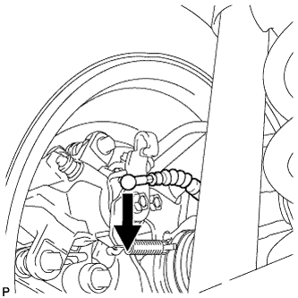
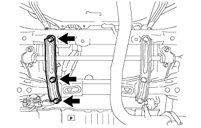
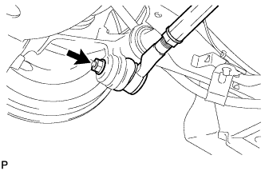
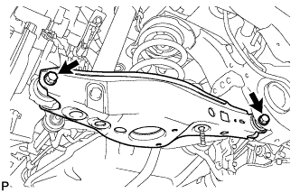
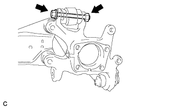
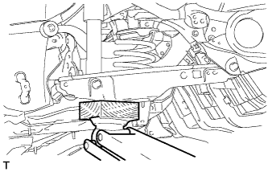
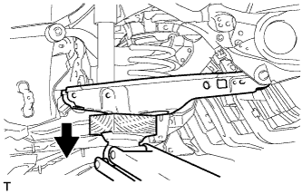
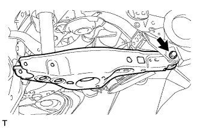
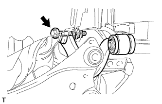
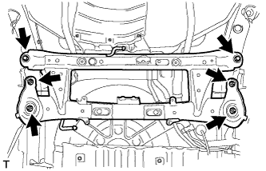

Rear Suspension Member Sub-assembly Removal |
| 1. Disconnect Battery Negative Terminal |
| 2. Remove Rear Tire |
| 3. Front Floor Center Brace Removal |
 |
Remove the 4 bolts and the front floor brace center.
| 4. Remove Exhaust Tail Pipe Assembly |
 |
Remove the 2 bolts and 2 compression springs.
Disconnect the 2 exhaust pipe supports and remove the exhaust tail pipe assembly.
Remove the gasket.
| 5. Remove Exhaust Pipe Assembly Center |
 |
Remove the 2 bolts and 2 compression springs.
Remove the 4 exhaust pipe supports and remove the center exhaust pipe assembly NO.2.
| 6. Skid Control Sensor Wire Disconnection |
 |
Disconnect the connector from the skid control sensor.
| 7. Remove Parking Brake Lever Protector |
 |
Remove the parking brake lever protector from the parking brake cable assembly No.3.
| 8. Disconnect Parking Brake Cable Assembly NO.3 |
 |
Disconnect the cable end from the operating lever of the rear disc brake cylinder assembly LH.
 |
Using an offset wrench (14mm), disconnect parking brake cable assembly No.3 from the rear disc brake cylinder assembly LH.
| 9. Disconnect Parking Brake Cable Assembly NO.2 |
| 10. Disconnect Rear Disc Brake Caliper Assembly LH |
 |
Remove the 2 bolts and disconnect the rear disc brake caliper assembly LH.
| 11. Disconnect Rear Disc Brake Caliper Assembly RH |
| 12. Remove Rear Disc LH |
 |
Put matchmarks on the disc and axle hub, and remove the disc.
| 13. Remove Rear Disc RH |
| 14. Remove Rear Axle Hub & Bearing Assembly LH |
 |
Remove the 4 bolts and remove the rear axle hub & bearing assembly LH from the rear axle carrier.
| 15. Remove Rear Axle Hub & Bearing Assembly RH |
| 16. Height Control Sensor Sub-assembly Rear Removal |
 |
Disconnect the connector and disengage the clamp.
 |
Remove the 2 bolts and remove the height control sensor assembly (rear).
| 17. Remove Rear Suspension Member Brace LH |
 |
Remove the 3 bolts and remove the rear suspension member brace LH.
| 18. Remove Rear Suspension Member Brace RH |
| 19. Remove Rear Stabilizer Link Assembly LH |
 |
Remove the nut and remove the rear stabilizer cushion.
 |
Remove the nut and remove the rear stabilizer link assembly LH.
| 20. Remove Rear Stabilizer Link Assembly RH |
| 21. Remove Stabilizer Bar Rear |
 |
Remove the 4 bolts and the 2 rear stabilizer bar brackets No.1.
Remove the rear stabilizer bar.
| 22. Remove Rear Suspension Arm Assembly NO.1 LH |
 |
Remove the nut of the rear suspension arm assembly No.1 LH (rear axle carrier LH side).
 |
Install SST to the stud bolt of the rear suspension arm assembly No.1LH.
Using SST, separate the rear suspension arm assembly No.1 LH from the rear axle carrier LH.

 |
Remove the bolt and nut, and remove the rear suspension arm assembly No.1 LH from the rear suspension member.
| 23. Rear Suspension Arm Assembly NO.1 RH Removal |
| 24. Loosen Trailing Arm Assembly Rear LH |
 |
Loosen the 2 bolts of the trailing arm assembly rear.
| 25. Loosen Trailing Arm Assembly Rear RH |
| 26. Loosen Rear Suspension Arm Assembly NO.2 LH |
 |
Loosen the 2 bolts of the rear suspension arm assembly No.2 LH.
| 27. Loosen Rear Suspension Arm Assembly NO.2 RH |
| 28. Remove Rear Axle Carrier LH |
 |
Remove the bolt and nut, and disconnect the upper control arm assembly rear LH from the rear axle carrier.
Remove the bolts and nuts, and remove the rear axle carrier from the trailing arm assembly rear and rear suspension arm assembly No.2 LH.
| 29. Remove Rear Axle Carrier RH |
| 30. Disconnect Shock Absorber Assembly Rear LH |
 |
Support the rear suspension arm assembly No.2 LH with a jack, with a block of wood in between.
 |
Remove the bolt and nut, and disconnect the rear shock absorber assembly LH.
| 31. Disconnect Shock Absorber Assembly Rear RH |
| 32. Remove Coil Spring Rear LH |
 |
With the rear shock absorber disconnected, gradually lower the jack and remove the rear coil spring insulator upper LH and rear coil spring LH together.
| 33. Remove Coil Spring Rear RH |
| 34. Remove Rear Coil Spring Insulator Upper LH |
| 35. Remove Rear Coil Spring Insulator Upper RH |
| 36. Remove Rear Coil Spring Insulator Lower LH |
| 37. Remove Rear Coil Spring Insulator Lower RH |
| 38. Remove Rear Suspension Arm Assembly NO.2 LH |
 |
Remove the bolt and nut, and remove the rear suspension arm assembly No.2 LH.
| 39. Rear Suspension Arm Assembly NO.2 RH Removal |
| 40. Remove Upper Control Arm Assembly Rear LH |
 |
Remove the bolt and nut, and remove the upper control arm assembly rear LH.
| 41. Remove Upper Control Arm Assembly Rear RH |
| 42. Remove Rear Suspension Member Sub-assembly |
 |
Remove the 2 bolts and 4 nuts, and remove the rear suspension member.